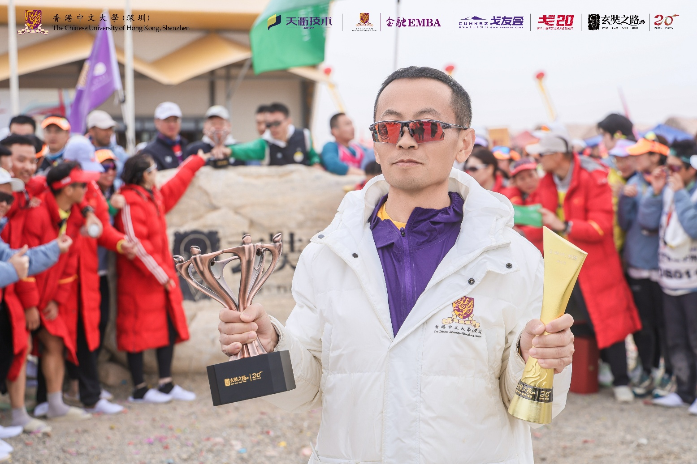
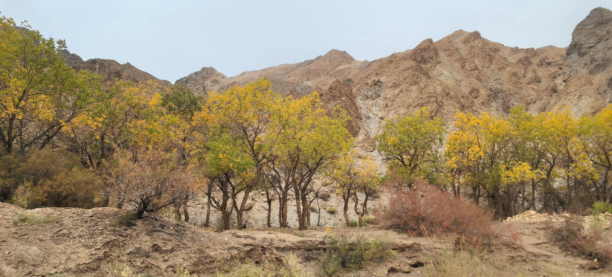
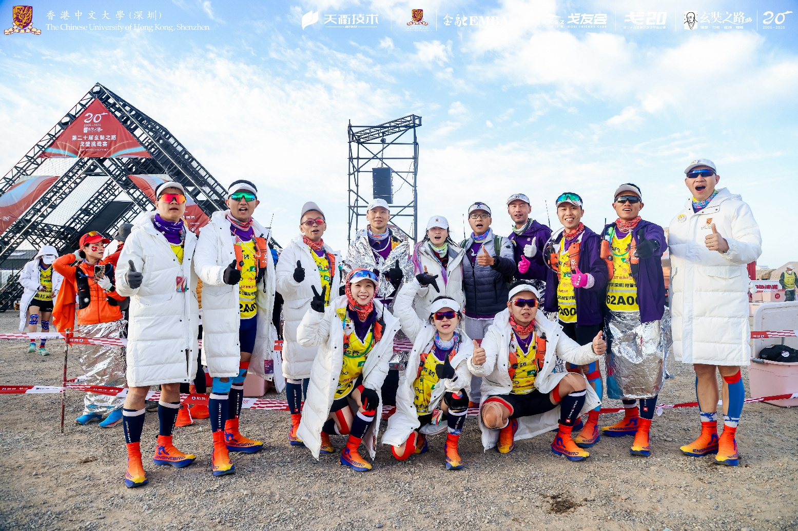
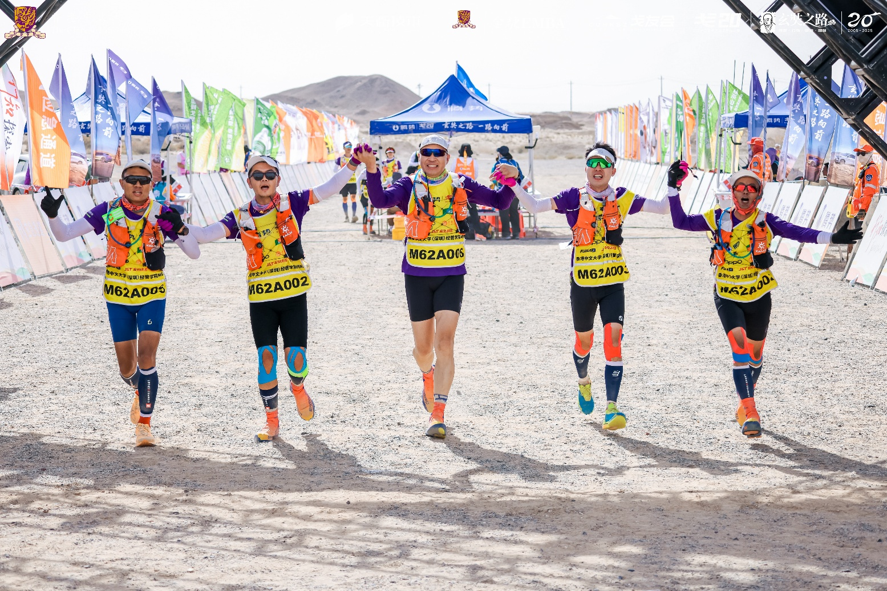
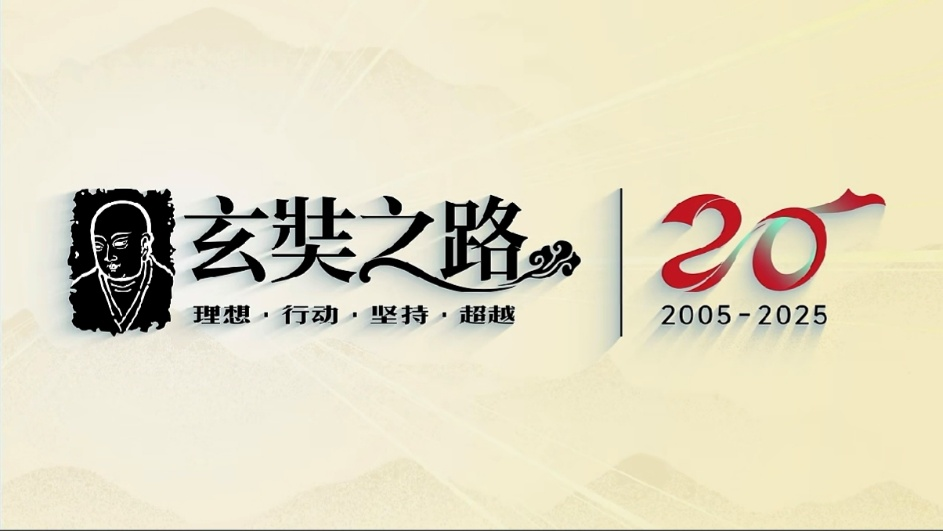

这次二刷戈壁跑A队，缘起于今年3/11谋剑发我的一条信息，“你今年有时间去跑A吗”，些许也带有两年前跑B队的不过瘾。3月份启动有规律的跑步备战。4月份厦门拉练开始接受专业教练指导，花了半年时间，月均训练量200公里以上，体重减了7斤。重新理解晨脉、法特莱特跑、呼吸、摆臂、力量训练、补给等跑步技术点。单讲技术都懂，真正系统用起来，形成肌肉记忆、适时调整策略还是挺难。跑步技术的提高跟我们这位来自国家队的教练有直接的关系。孙教练创新训练方式，自己拍了力量训练的视频，制定周训练计划，还把队伍拉到游泳池训练跑姿。6月珠海拉练，适逢暑热天气，第二天30公里跑崩，差点中暑。7月昆明拉练，适应高海拔，第二天状态出来了，越跑越好。9月份的哈马跑进四小时，PB就是训练成果。9月份深圳的拉练，思怡从成都飞过来，终于集齐了所有参赛队员，全员练习前后队策略、拖拽等战术配合。

我作为前队成员，冲了三天成绩。团队配合非常好，两位女戈的坚韧、毅力更是让人印象深刻。跑步能力的提高，让我能跳出跑步本身，一路有些许思考。
· 见天。风沙、烈焰、骆驼刺，变化多端是戈壁的一部分，千万年它已经在哪儿，算是一切生命的约束条件。戈壁最后一晚，黄沙四起，少眠，衣物上满是风沙，就似生活中的不如意随时到来，面对它，让一切发生。
· 见地。戈壁虽然荒凉无比，仍有植物生长，它低矮、少叶、聚集成片，靠近水源。最美的当属那山谷内的胡杨，坚韧、顽强，适应严苛的生存环境，不由的让我想去探究生长的智慧。


· 见众生。不见天地，难生敬畏之心；不见众生，则不足以懂感恩之情。MBM首次组建A队，历经创始、组队、成长在戈壁三个阶段。谋剑作为队长，喊了一嗓子，便唤醒了老戈们重回戈壁的心，厦门集训则似MBM戈20的“中共一大”，随着娜娜、鼎哥、思怡等人的加入，终于完成了组队。虎哥、轩哥、福洋等作为B队，承载未来薪火相传。正是这一拨爱玩的人，燃烧自己，照亮别人，一起完成了挑战赛。
再好的准备也比不上真实环境，上了戈壁，才能理解协作、互助、拼尽全力像呼吸一样自然，每个人都统一在奔向终点、团队安全完赛这一大目标下。
有人问我戈壁挑战赛的灵魂是什么？我想说挑战赛本身没有什么，就是一场恶劣条件下的跑步，是没苦硬吃，顶多发现自己的身体潜能。但是，戈壁给了我重新发现自己和思考未来的机会。因为茫茫戈壁，尽管条件恶劣，仍有生命智慧、顽强的活下来，活下来就是一种美丽。人往往欲求太多，尤其是生活在城市的我们，困顿于过多物质的追求而焦虑不安。戈壁给了我跳脱出来的机会，让我思考真正有意义的价值在哪里？觉醒之后再出发。
戈壁给予我奔向终点的勇气，以及重新出发的智慧。诚恳与自己对话，心里渐渐明晰了重新出发的路。修完戈壁这一课，我今天毕业。

